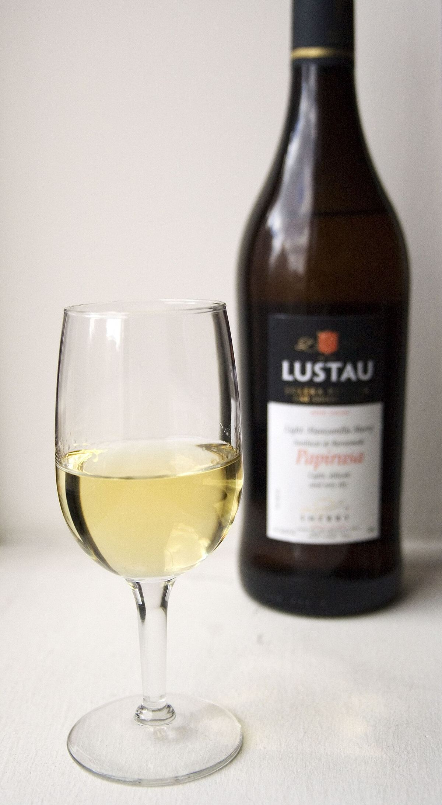

FORTIFIED
Jerez house founded in 1896, known for its broad range of styles, its collection of almacenista wines and for ageing wines in all three towns of the Sherry Triangle: Jerez, El Puerto de Santa María and Sanlúcar.

Lustau's origins go back to 1896, when José Ruiz-Berdejo began ageing wine in Jerez as an almacenista, that is, maturing wines that he then sold to the large exporting houses. His son-in-law, Emilio Lustau Ortega, gave the winery its name. Later the house began bottling and exporting under its own brand. Since 1990 it has belonged to the Luis Caballero group of El Puerto de Santa María.
Lustau is known for its Almacenista series, which selects and bottles wines from small independent stockholders, stating on the label the almacenista's name and the number of casks in the solera. This collection has helped to reveal the diversity of styles and nuances hidden in the bodegas of the Sherry Triangle.
The house ages wines in all three towns of the triangle: Jerez de la Frontera, El Puerto de Santa María and Sanlúcar de Barrameda, each with its own microclimate, which influences the development of the flor. It thus makes finos from Jerez and El Puerto, such as Puerto Fino, and manzanillas from Sanlúcar, such as Papirusa. The range is completed by amontillados, olorosos such as Don Nuño, palo cortados, Pedro Ximénez such as San Emilio, creams such as East India Solera and VORS wines.
The house offers visits to its Jerez bodegas with a tasting of different wine styles.


